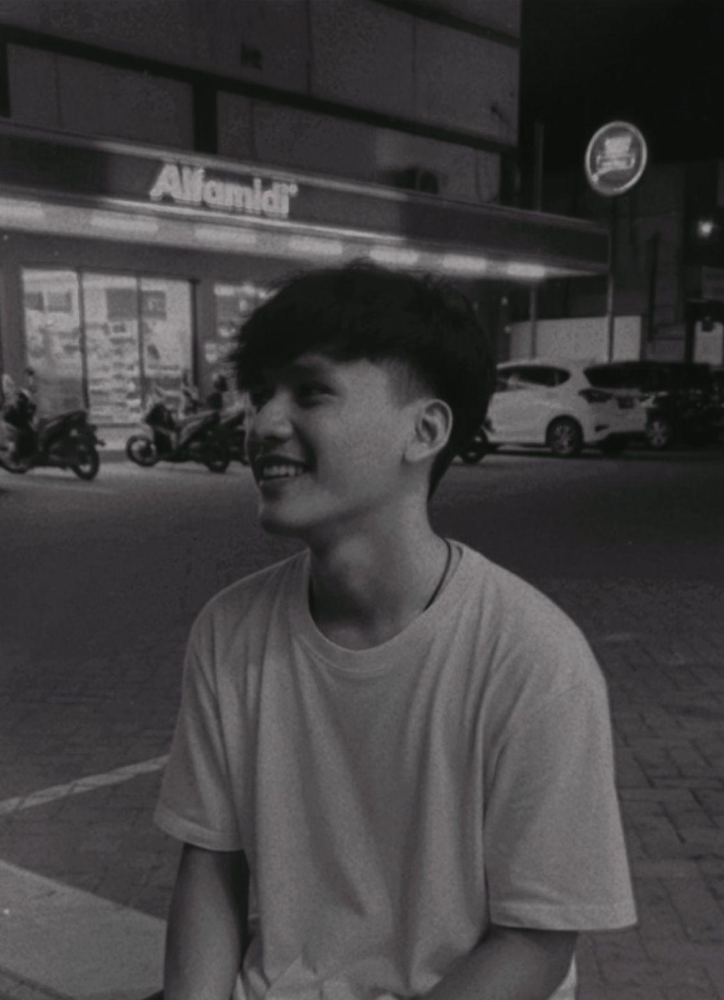
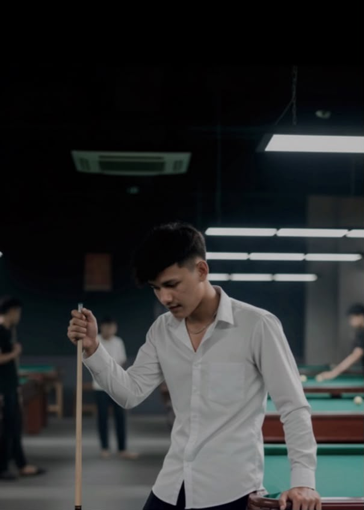

a little space for you 🤍


a letter for you
Sayangg, selamat National Boyfriend Day.
Aku nggak tau harus mulai dari mana, tapi aku cuma pengen bilang kalau aku bersyukur banget punya kamu. Dari semua orang di dunia ini, aku dapet kamu, Darul Muarif, yang walaupun jauh di Banda Aceh sana, tetep bisa bikin hari-hariku lebih baik.
Jujur, LDR itu nggak pernah gampang. Ada hari-hari aku kangen banget sampe rasanya pengen langsung terbang ke tempatmu, ada juga hari aku overthinking sendiri gara-gara chat yang kelamaan dibales. Tapi setiap kali itu terjadi, kamu selalu berusaha ngertiin aku, dan itu artinya besar banget buat aku.
I really appreciate waktu dan usaha yang kamu kasih, di tengah kamu yang sibuk kerja dan aku yang sibuk kuliah. Kita tetep nyempetin waktu buat satu sama lain, dan itu bukan hal kecil buatku.
Aku berharap suatu hari nanti kita bisa akhirnya ketemu langsung, gandengan tangan, jalan bareng, ngelakuin hal-hal simple yang selama ini cuma bisa kita bayangin lewat video call. Sampai hari itu datang, aku mau tetep jaga hubungan ini, sekuat yang aku bisa.
I love you, sayangg. Segitu aja, tapi maksudnya lebih dari itu.
for you, sayangg ♡
- thank you for staying.
- thank you for understanding me.
- thank you for making distance feel a little easier.
- even from miles away, you're still my favorite person.
- i'll keep choosing you, sayangg. ♡
Happy National Boyfriend Day, sayangg 🤍
Semoga suatu hari nanti jarak ini cuma jadi cerita tentang bagaimana kita pernah berjuang untuk sampai pada satu sama lain.
Rechaa ♡